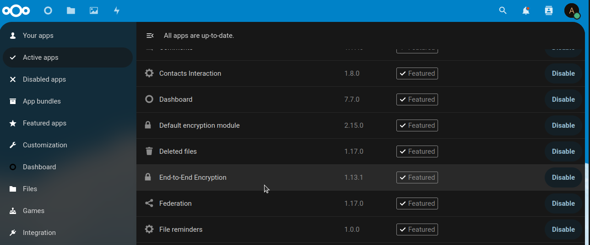

tests package
Submodules
tests.end_to_end_encryption module
Testing End-to-End Encryption (E2EE) in Nextcloud Client
This documentation provides a comprehensive guide to manually test the End-to-End Encryption (E2EE) functionality in the Nextcloud client. E2EE is designed to protect user data from access by the server or any other unauthorized entities. Due to the complexity of interacting with the GUI in a Linux environment, this test is conducted manually.
Prerequisites
Before proceeding with the testing, ensure the following prerequisites are met:
A functioning Nextcloud server deployment.
Access to a Linux environment with GUI support for installing and operating the Nextcloud client.
Administrative access to the Kubernetes cluster where Nextcloud is deployed, to verify encrypted files directly on the server.
Steps
Install and Enable the End-to-End Encryption App: Before installing the Nextcloud client, ensure the End-to-End Encryption (E2EE) app is installed and enabled on your Nextcloud server. This app is crucial for securing your files during storage and transfer.
Navigate to Apps: Log into your Nextcloud server web interface as an administrator.
Access the Apps Management Page: Click on your user profile icon at the top right corner of the interface and select ‘Apps’ from the dropdown menu.
Install the End-to-End Encryption App: In the Apps management page, go to the ‘Files’ category. Find the ‘End-to-End Encryption’ app in the list, and click ‘Download and enable’.
Enable the App: After the download completes, the app will automatically be enabled. Verify this by checking that it appears in your list of enabled apps.
Note: - Ensure that your Nextcloud server is compatible with the version of the End-to-End Encryption app you intend to install. Compatibility details are usually listed on the app’s page within the Apps management interface.
Verify E2EE App Activation: - Confirm the activation of the End-to-End Encryption app by navigating to ‘Settings’ under your profile menu. Check the ‘Security’ section to see if the End-to-End Encryption settings are available and configured correctly.
Download and Install the Nextcloud Client: This section outlines two methods to install the Nextcloud client on Linux: using Snap and using the APT repository. Follow the method that best suits your environment.
Using Snap:
Update your package index and install snapd if it’s not already installed:
sudo apt update sudo apt install snapd
Install the Nextcloud desktop client using Snap:
sudo snap install nextcloud-desktop-client
Using APT Repository (For Ubuntu 17.10 and later):
Open a terminal window and add the Nextcloud PPA to your system:
sudo add-apt-repository ppa:nextcloud-devs/client
Update the package index after adding the PPA:
sudo apt update
Install the Nextcloud client:
sudo apt install nextcloud-client
Note:
The Snap method is generally simpler and provides automatic updates to the Nextcloud client.
The APT method allows for more control over the installation process and may provide a more integrated system experience depending on your specific Linux distribution.
Choose the installation method that aligns with your system management preferences and follow the corresponding steps to complete the installation.
Connect the Client to the Nextcloud Server:
Launch the Nextcloud client.
Click on the loin button
Enter the URL of your Nextcloud server and provide the necessary credentials to establish a connection.
Accept the connection request from the server and log in to your Nextcloud account.
Create and Encrypt a Folder:
Within the Nextcloud client, create a new folder. You can name it TestE2EE.
Inside this folder, create a new text file named test.txt.
Enter some content into the text file, for example, “This is a test for E2EE.”
Save the file. Then, right-click on the TestE2EE folder and select the option to encrypt the folder.
Verify the File on the Server:
Access your Kubernetes cluster where Nextcloud is deployed.
Use the command line to run:
kubectl get pv
Identify the persistent volume (PV) used by Nextcloud, usually tagged as nextcloud-data.
Describe the PV to find the storage path on the node:
kubectl describe pv nextcloud-data
Execute sudo -i and then access the server’s storage path where Nextcloud data is stored:
sudo -i cd <path-to-my-nextcloud-data-pvc-directory>/data/admin/files cd test_E2EE ls
Navigate to the directory containing user files and attempt to read the contents of test.txt:
cat <username>/files/<encrypted file name>.txt
Check Encryption:
Review the output from the cat command.
The contents of test.txt should appear garbled or encrypted, indicating that E2EE is functioning correctly.
{kind=link}
{kind=link}
{kind=link}
{kind=link}
{kind=link}
{kind=link}
{kind=link}
{kind=link}
{kind=link}
{kind=link}
{kind=link}
{kind=link}
{kind=link}
Conclusion
This manual test confirms whether E2EE is effectively encrypting files as expected, preventing unauthorized access even if server storage is compromised. Due to the nature of manual testing, this process is recommended to be conducted periodically to ensure ongoing compliance and functionality of the E2EE feature in Nextcloud.
Note
For automated tests or more complex scenarios, consider scripting interactions with the Nextcloud client using tools capable of GUI automation, tailored for your specific testing environment and requirements.
tests.test_create_user module
- tests.test_create_user.add_user(driver, username, display_name, password, email, group, quota, manager)[source]
Adds a new user to the application with specified attributes.
This function utilizes the add_user_and_check_presence utility function from the functional_testing.utils.user_management module to create a new user in the application. It then verifies the presence of the newly added user to ensure successful creation. The process involves automating browser interactions using Selenium WebDriver to fill and submit the new user form with provided user details.
- Parameters:
driver (WebDriver) – An instance of Selenium WebDriver, used for automating interactions with the web application’s interface.
username (str) – The username for the new user. Must be unique within the application.
display_name (str) – The display name of the new user. This is the name that will be displayed within the application’s UI.
password (str) – The password for the new user’s account. Ensure compliance with application’s password policy.
email (str) – The email address associated with the new user. Must be in a valid email format.
group (str, optional) – The group to which the new user will be assigned. Defaults to ‘admin’. Available groups may vary based on application configuration.
quota (str, optional) – The storage quota assigned to the new user’s account. Defaults to ‘1 GB’. The format and available options may depend on application settings.
manager (str, optional) – The username of the user’s manager. Defaults to ‘admin’. This is relevant in applications with hierarchical user management.
- Returns:
True if the new user is successfully added and their presence is verified within the application, False if the addition fails at any step or if the user cannot be verified post-creation.
- Return type:
bool
- Raises:
Exception – Propagates exceptions that may arise during the user creation or verification process, including issues with browser automation or failures in interacting with the application’s UI.
Example:
>>> from selenium import webdriver >>> driver = webdriver.Chrome() >>> result = add_user(driver, "new_user", "New User", "securepassword", "new_user@example.com", ... "users", "2 GB", "senior_manager") >>> print(result) True
- Note:
This function requires the NEW_USER_BUTTONS_XPATH dictionary from the functional_testing.config.configuration module, which contains XPaths for various UI elements involved in the user creation process.
tests.test_delete_user module
- tests.test_delete_user.delete_user(driver, username)[source]
Deletes a specified user from the application and verifies their absence.
This function navigates to the user management page, performs the deletion of a user based on the given username, and checks to ensure the user is no longer present in the application. It utilizes utility functions for navigation, user deletion, and verification of user absence. If the function encounters any exceptions during the process, it returns False, indicating the user was not successfully deleted.
- Parameters:
driver (WebDriver) – An instance of Selenium WebDriver, used to automate browser interactions.
username (str) – The username of the user to be deleted. This is used to identify the specific user in the user management interface.
- Returns:
Returns True if the user is successfully deleted and confirmed to be absent from the application. Returns False if the deletion process fails at any step or if the user is still present after the deletion attempt.
- Return type:
bool
- Raises:
Exception – Propagates any exceptions encountered during navigation, user deletion, or verification of user absence. It logs the exception before re-raising, providing context for the error.
Note
The function assumes that it’s being called within the context of an authenticated session where the driver has access to the application’s user management interface.
This function relies on external utility functions navigate_to_users_page, perform_delete_user, and check_user_absence for various steps of the process. Ensure these are correctly implemented and accessible in the project.
Example:
>>> from selenium import webdriver >>> driver = webdriver.Chrome() >>> username = "testuser" >>> deletion_success = delete_user(driver, username) >>> print(deletion_success) True
tests.test_file_delete module
- tests.test_file_delete.delete_file(driver, file_name)[source]
Deletes a specified file from NextCloud.
This function navigates to the NextCloud files section by ensuring the session is logged in. It then attempts to delete a file with the given name. Successful deletion is verified internally by the function perform_delete_file. If the deletion process encounters any issues, an exception is raised.
- Parameters:
driver (WebDriver) – An instance of Selenium WebDriver used for automating interactions with the NextCloud web application. It should be properly initialized and configured prior to calling this function.
file_name (str) – The name of the file to be deleted from NextCloud. The name should match exactly with the file present in NextCloud, including file extension.
- Returns:
True if the file is successfully deleted, False otherwise. This adjustment from the original docstring without a return statement provides clarity on the function’s success through a boolean.
- Return type:
bool
- Raises:
AssertionError – If the file was not deleted successfully. This assertion could be raised within the perform_delete_file function based on the verification of the file’s absence after the deletion attempt. Handling or logging this error in the calling context is recommended to make informed workflow decisions based on the file deletion success.
Example:
>>> from selenium import webdriver >>> driver = webdriver.Chrome() >>> file_name = "example_document.pdf" >>> deletion_success = delete_file(driver, file_name) >>> if deletion_success: ... print(f"File {file_name} was successfully deleted.") ... else: ... print(f"Failed to delete the file {file_name}.")
tests.test_file_download module
- tests.test_file_download.download_file(driver, file_name)[source]
Downloads a specified file from NextCloud.
This function first ensures that the session is logged into NextCloud, and that the file management screen is open, by invoking ensure_logged_in_and_goto_files. It then attempts to download a file with the specified file_name. The success of the download operation is determined by checking the presence of the downloaded file in a predetermined download directory. This function assumes that perform_download_file is responsible for both downloading the file and verifying its presence in the DOWNLOAD_DIRECTORY.
- Parameters:
driver (WebDriver) – An instance of Selenium WebDriver, used for automating interactions with the web application. The driver should be configured to handle file downloads, including specifying the download directory.
file_name (str) – The name of the file to be downloaded from NextCloud. The file name should include any file extension if applicable and match exactly with a file available in NextCloud.
- Returns:
True if the file is successfully downloaded and verified to be present in the local download directory, False otherwise.
- Return type:
bool
- Raises:
Exception – If any error occurs during the process of navigating to the files page, initiating the file download, or verifying the file’s presence in the local directory.
Note
The function leverages configuration variables from functional_testing.config.configuration for navigation and login.
The download directory is set via the DOWNLOAD_DIRECTORY configuration variable. This directory should be correctly configured in both the WebDriver setup and the environment to ensure downloaded files are saved and found as expected.
The function prints a success message in green upon successful download. This visual cue can be helpful in interactive or manual testing scenarios.
from selenium import webdriver driver = webdriver.Chrome() file_name = "sample_document.pdf" success = download_file(driver, file_name) if success: print(f"The file {file_name} was successfully downloaded.") else: print(f"Failed to download the file {file_name}.")
tests.test_file_integrity module
- tests.test_file_integrity.file_integrity(file_name)[source]
Verifies the integrity of a file by comparing the hash of the uploaded file with that of the downloaded file.
This function aims to ensure data integrity by verifying that a file, once uploaded and then downloaded from NextCloud, remains unaltered. It computes and compares the hash values of both the uploaded and downloaded versions of the file located in predetermined directories. A match in hash values indicates that the file has maintained its integrity throughout the upload and download process.
- Parameters:
file_name (str) – The name of the file for which integrity is being checked. This name should include any file extension and match exactly between the uploaded and downloaded files.
- Returns:
Returns True if the hash values of the uploaded and downloaded files match, indicating the files are identical and integrity is preserved. Returns False if there is a mismatch in hash values, suggesting the files are different and integrity may have been compromised.
- Return type:
bool
- Raises:
AssertionError – Raises an assertion error if the hash comparison fails, indicating the uploaded and downloaded files are not the same. This may point to issues in the file transfer process or unauthorized alterations of the file content.
Example:
>>> file_name = "example_document.pdf" >>> integrity_check = file_integrity(file_name) >>> if integrity_check: ... print("File integrity verified.") ... else: ... print("File integrity compromised.")
Note
The function relies on the compare_hashes utility to perform the hash computation and comparison. Ensure that DOWNLOAD_DIRECTORY and CREATED_FILES_PATH in the configuration module accurately reflect the paths to where the NextCloud application stores downloaded files and where uploaded files are kept, respectively. It assumes that the upload and the download have been performed successfully.
tests.test_file_upload module
- tests.test_file_upload.upload_file(driver, file_path)[source]
Uploads a file to NextCloud and verifies its presence in the file list in Nextcloud UI.
This function automates the process of uploading a file to NextCloud using Selenium WebDriver. It ensures that the user is logged in and navigates to the files section. The function then initiates the file upload process and verifies whether the uploaded file appears in NextCloud’s file list. If the file is not found within a specified timeout, the upload is considered unsuccessful.
- Parameters:
driver (WebDriver) – The Selenium WebDriver instance used to automate browser interactions. It should be initialized and configured to the target NextCloud instance prior to calling this function.
file_path (str) – The absolute path of the file on the local system that is to be uploaded. Ensure that the path is accessible and readable by the script to avoid errors during the upload process.
- Returns:
True if the file is successfully uploaded and verified to be present in NextCloud’s file list. False if the file does not appear in the list after the upload process, indicating a failure.
- Return type:
bool
- Raises:
Exception – General exception if an error occurs at any point during the login, navigation, upload process, or file presence check. The specific exception message is printed to provide insights into the failure reason.
Note
This function assumes that TARGET_URL, USERNAME, PASSWORD, LOGIN_BUTTON_XPATH, FILES_TAB_XPATH, NEW_FILE_OR_FOLDER_MENU_XPATH, and FILE_UPLOAD_START_ID are correctly configured in the functional_testing.config.configuration module.
Ensure that the WebDriver instance (driver) has been correctly authenticated with NextCloud prior to calling this function if not relying on the function’s login mechanism. It’s recommended to use the login function before calling this function.
from selenium import webdriver driver = webdriver.Chrome() file_path = "/path/to/your/file.txt" upload_success = upload_file(driver, file_path) if upload_success: print("File upload successful.") else: print("File upload failed.")
tests.test_login module
- tests.test_login.login(driver)[source]
Authenticates a user into NextCloud using predefined credentials.
This function orchestrates the process of logging into a NextCloud instance. It begins by navigating to the NextCloud login page, specified by TARGET_URL, and then proceeds to input the predefined credentials (USERNAME and PASSWORD) into the login form. The function checks for successful authentication by verifying the presence of elements unique to authenticated sessions. If the login attempt faces any issues, the function gracefully handles exceptions and provides feedback.
- Parameters:
driver (WebDriver) – An instance of a Selenium WebDriver, used to automate web browser interaction. The driver must be initialized and configured prior to calling this function.
- Returns:
Indicates the outcome of the login attempt. Returns True if the login process completes successfully, indicating that the user has been authenticated. Returns False if there are any issues during the login process, suggesting that the authentication did not occur.
- Return type:
bool
- Raises:
Exception – Raises a generic exception if any unexpected errors occur during the execution of the login process. The exception captures and suppresses detailed error information to prevent potential sensitive data exposure, adhering to security best practices.
- Example:
>>> from selenium import webdriver >>> driver = webdriver.Chrome() >>> login_success = login(driver) >>> if login_success: ... print("Login successful.") ... else: ... print("Login failed.")
- Note:
The login process relies on several configuration variables defined in the functional_testing.config.configuration module, including TARGET_URL, USERNAME, PASSWORD, and LOGIN_BUTTON_XPATH. Ensure these variables are accurately set to reflect the current state of the NextCloud login page and user credentials.
tests.test_logout module
- tests.test_logout.logout(driver)[source]
Performs logout from the application using the provided WebDriver instance.
This function navigates the application’s UI to log out the currently authenticated user. It specifically handles the UI interactions required to open the settings menu, click the logout button, and verify the logout process by checking for the presence of the login button. It uses a series of utility functions tailored to interact with specific UI elements defined in the configuration module.
- Parameters:
driver (WebDriver) – An instance of Selenium WebDriver. This is used to automate the interaction with the web browser, enabling the function to perform actions like clicking and checking the presence of UI elements.
- Returns:
Indicates the outcome of the logout attempt. Returns True if the logout process is completed successfully, evidenced by the appearance of the login button. Returns False if the logout process fails at any step, either due to UI elements not being found or other exceptions.
- Return type:
bool
- Raises:
NoSuchElementException – Raised if any expected UI element involved in the logout process is not found within the current page. This exception points to possible changes in the UI or an incorrect navigation state.
Exception – A generic exception is raised for any other errors encountered during the logout process. The function catches and logs these exceptions, providing a message detailing the encountered issue.
Example: driver = webdriver.Chrome() logout_success = logout(driver) if logout_success: print("Successfully logged out.") else: print("Logout failed.")
Note
The function assumes that the user is already logged in and that the WebDriver instance (driver) is in a state that allows direct interaction with the application’s logout functionality. It relies on accurate XPath locators for the settings menu and logout button, specified in OPEN_SETTINGS_MENU_XPATH, CLOSED_SETTINGS_MENU_XPATH, and LOGOUT_BUTTON_PATH, which should be configured in the functional_testing.config.configuration module before invoking this function.